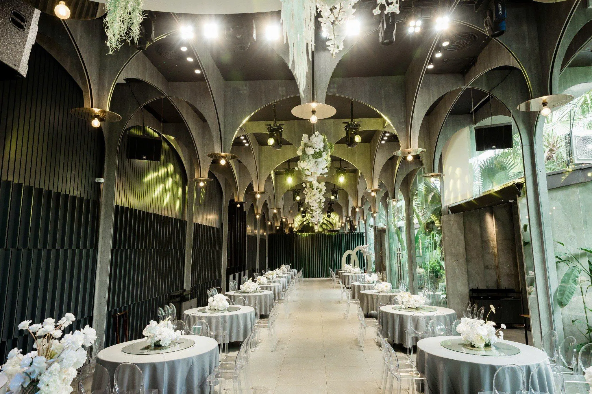
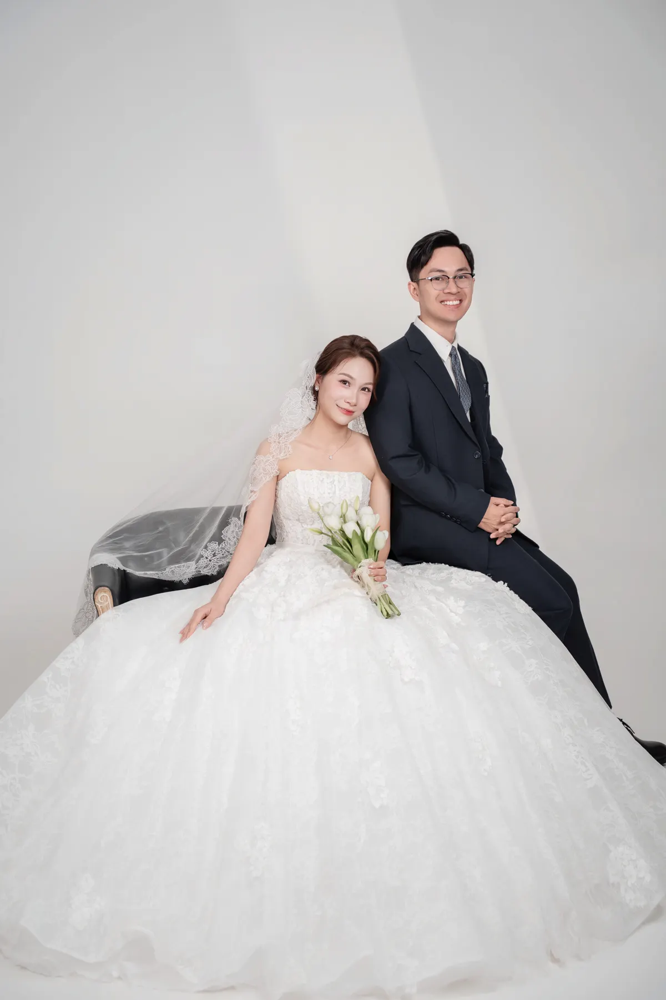

Trân trọng kính mời
Quý khách
tới dự bữa cơm thân mật mừng lễ thành hôn của hai chúng tôi
Viết Trung & Bùi Anh

Hai nhà
Nhà trai
Ông Lê Viết Cảnh, Bà Nguyễn Thị Cúc. Viết Trung, út nam.
Nhà gái
Ông Bùi Xuân Thái, Bà Phạm Thị Sự. Bùi Anh, út nữ.
Hai người con út, một lời ngoắc tay.
Có những ngày mình muốn giữ thật lâu.


Ngày mình về chung một nhà
18 giờ 00, Thứ Bảy, ngày 28 tháng 11 năm 2026.
Tức ngày 20 tháng 10 năm Bính Ngọ.
W. Jardin
Trung tâm tiệc cưới W. Jardin, Số 307 Nguyễn Văn Linh, phường Kênh Dương, thành phố Hải Phòng.

Sự hiện diện của quý khách là niềm vinh hạnh cho gia đình chúng tôi.
Rất hân hạnh được đón tiếp!
